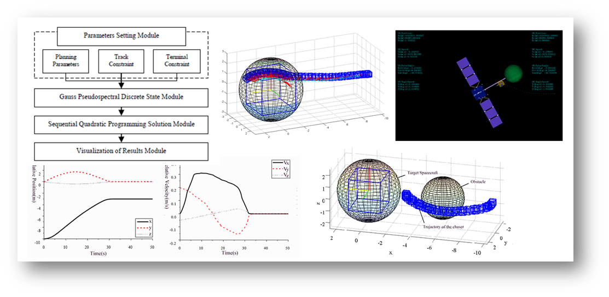
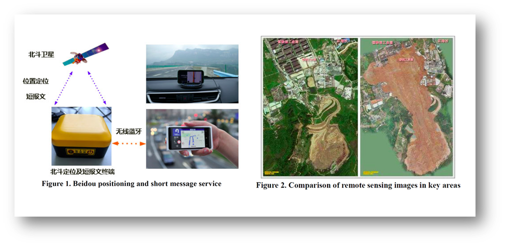

<!DOCTYPE html PUBLIC "-//W3C//DTD XHTML 1.1//EN"
  "http://www.w3.org/TR/xhtml11/DTD/xhtml11.dtd">
<html xmlns="http://www.w3.org/1999/xhtml" xml:lang="en">
<head>
<meta name="generator" content="jemdoc, see http://jemdoc.jaboc.net/" />
<meta http-equiv="Content-Type" content="text/html;charset=GBK" />
<link rel="stylesheet" href="jemdoc.css" type="text/css" />
<title>Research [<b><a href="https://scholar.google.com/citations?user=maZqCl8AAAAJ&amp;hl=en" target=&ldquo;blank&rdquo;>Google Scholar</a></b>]</title>
</head>
<body>
<table summary="Table for page layout." id="tlayout">
<tr valign="top">
<td id="layout-menu">
<div class="menu-category"><div class="menu-head">HENG SHI</div></div>
<div class="menu-item"><a href="index.html">Home</a></div>
<div class="menu-item"><a href="publication.html">Publications</a></div>
<div class="menu-item"><a href="research.html" class="current">Research</a></div>
<div class="menu-item"><a href="honoraward.html">Honors&nbsp;&amp;&nbsp;Awards</a></div>
<div class="menu-item"><a href="activities.html">Activities</a></div>
<div class="menu-item"><a href="life.html">Life</a></div>
<div class="menu-item"><a href="CV_SH.pdf">Resume</a></div>
<div class="menu-item"><a href="contact.html">Contact</a></div>
</td>
<td id="layout-content">
<div id="toptitle">
<h1>Research [<b><a href="https://scholar.google.com/citations?user=maZqCl8AAAAJ&amp;hl=en" target=&ldquo;blank&rdquo;>Google Scholar</a></b>]</h1>
</div>
<p>Advisor: <a href="http://www.cs.tsinghua.edu.cn/publish/cs/4616/2013/20130424105018901205437/20130424105018901205437_.html" target=&ldquo;blank&rdquo;>Prof. Jihong Zhu</a> [<a href="http://xueshu.baidu.com/scholarID/CN-BT73SJUJ" target=&ldquo;blank&rdquo;>Scholar</a>]</p>
<h1>Missile Guidance</h1>
<h2>Detection and Guidance of Aircraft Active Defense System</h2>
<p>Aug 2017 to Present<br /></p>
<ul>
<li><p>Performed computational analysis on the Aircraft-Missile-Defender" three-body pursuit-evasion problem</p>
</li>
<li><p>Formulated MATLAB algorithms to implement the novel predictive guidance laws of the defender missile</p>
</li>
<li><p>Conducted identification of guidance law against an unknown missile</p>
</li>
<li><p>Developed a real-time digital Aircraft Active Defense simulation system using RTX, including the full-process dynamics and closed loop control of aircrafts and missiles</p>
</li>
<li><p>Collaboratively developed the 3D visual flight simulation system using Unity3D</p>
</li>
</ul>
<p></p>
<h2>Cooperative Guidance of Multiple Kill Vehicles</h2>
<p>Apr 2016 to Nov 2017</p>
<ul>
<li><p>Designed and optimized the cooperative detection and guidance strategy</p>
</li>
<li><p>Proposed a high-accuracy position measurement method based on sensors fusion
techniques</p>
</li>
<li><p>Formulated a framework to implement the dynamics simulation of vehicles by C++</p>
</li>
<li><p>Developed the visual simulation system using OpenSceneGraph</p>
</li>
<li><p>Performed the full-process dynamics simulation of midcourse defense</p>
</li>
</ul>
<div align="left"> <iframe width="560" height="315" src="https://www.youtube.com/embed/1zYYM5NaFJA" frameborder="0" allowfullscreen align="middle"></iframe> </div>
<h2>Trajectory Planning of Approaching Non-cooperative Targets Based on Gauss Pseudospectral Method</h2>
<div align="left"> <iframe width="560" height="315" src="https://www.youtube.com/embed/_eiH_-l_YNY" frameborder="0" allowfullscreen align="middle"></iframe> </div>
<h2>Modeling and Flight Control of a Flying-Wing Tailsitter</h2>
<p>Sep 2015 to Nov 2016</p>
<ul>
<li><p>Performed analysis on the simulation using Simulink</p>
</li>
<li><p>Assembled an S500 UAV and made several experiments</p>
</li>
<li><p>Worked with fellow group members and produced a Flying-Wing Tailsitter UAV</p>
</li>
<li><p>Collaboratively developed a novel active disturbance rejection control method</p>
</li>
</ul>
<div align="left"> <iframe width="560" height="315" src="https://www.youtube.com/embed/OacD-mnZli0" frameborder="0" allowfullscreen align="middle"></iframe> </div>
<h1>Other</h1>
<h2>UAV Flying</h2>
<div align="left"> <iframe width="560" height="315" src="https://www.youtube.com/embed/TEmM2vCMWcc" frameborder="0" allowfullscreen align="middle"></iframe> </div>
<div align="left"> <iframe width="560" height="315" src="https://www.youtube.com/embed/O1Wjktp9_1Y" frameborder="0" allowfullscreen align="middle"></iframe> </div>
<h2>Missile Infrared Simulation</h2>
<div align="left"> <iframe width="560" height="315" src="https://www.youtube.com/embed/jD2oVYfAf2k" frameborder="0" allowfullscreen align="middle"></iframe> </div>
<h2>Human-computer Interaction</h2>
<p>Cooperative control of human-computer interaction tools with high recognition rate</p>
<div align="left"> <iframe width="560" height="315" src="https://www.youtube.com/embed/2JZ4t5akjbc" frameborder="0" allowfullscreen align="middle"></iframe> </div>
<p>Play fruit ninja using Kinect on PC</p>
<div align="left"> <iframe width="560" height="315" src="https://www.youtube.com/embed/N3VjhB9neWA"" frameborder="0" allowfullscreen align="middle"></iframe> </div>
<h1>Publications</h1>
<table class="imgtable"><tr><td>
&nbsp;</td>
<td align="left"><p><b>Heng Shi</b>, Jihong Zhu, Xiaming Yuan, Minchi Kuang, Wufan Wang, Zhihui Deng. &ldquo;Research on Intercepting Strategy of Multiple Kill Vehicle in Midcourse Defense Based on Multi-Sensors Fusion
Method&rdquo;. <i>IFAC-PapersOnLine</i>, 50(1): 15032-15037, 2017. (<b><a href="https://www.ifac2017.org/" target=&ldquo;blank&rdquo;>IFAC 2017</a>, Toulouse</b>)&nbsp;&nbsp;<b><font color="Red">[Oral]</font></b>
<br /> [<a href="pub/IFAC.pdf" target=&ldquo;blank&rdquo;>paper</a>]&nbsp;[<a href="https://www.youtube.com/watch?v=_eiH_-l_YNY&amp;feature=youtu.be" target=&ldquo;blank&rdquo;>video</a>]&nbsp;[<a href="conference.html" target=&ldquo;blank&rdquo;>@conference</a>]</p>
</td></tr></table>
<table class="imgtable"><tr><td>
&nbsp;</td>
<td align="left"><p><b>Heng Shi</b>, Jihong Zhu. &ldquo;Trajectory Planning of Approaching Non-cooperative Targets Based on Gauss Pseudospectral Method&rdquo;. <i>Advances in the Astronautical
Sciences</i>, 160(1): 1527-1538, 2017. 
<br />(<b><a href="http://www.space-flight.org/docs/2017_winter/2017_winter.html" target=&ldquo;blank&rdquo;>27th AAS/AIAA Space Flight Mechanics Meeting</a>, San Antonio</b>)&nbsp;&nbsp;<b><font color="Red">[Oral]</font></b>
<br /> [<a href="pub/AAS.pdf" target=&ldquo;blank&rdquo;>paper</a>]&nbsp;[<a href="https://www.youtube.com/watch?v=1zYYM5NaFJA&amp;feature=youtu.be" target=&ldquo;blank&rdquo;>video</a>]&nbsp;[<a href="conference.html" target=&ldquo;blank&rdquo;>@conference</a>]</p>
</td></tr></table>
<table class="imgtable"><tr><td>
&nbsp;</td>
<td align="left"><p><b>Heng Shi</b>, Jihong Zhu. &ldquo;Research on Application Specication of Chinese Domestic Satellite Technology in Field of Intelligent Tourism&rdquo;. <i>China Satellite Navigation Conference</i> (CSNC). 2017. 
<br /> [<a href="pub/CSNC.pdf" target=&ldquo;blank&rdquo;>paper</a>]</p>
</td></tr></table>
<table class="imgtable"><tr><td>
&nbsp;</td>
<td align="left"><p>XiaonaWei, Yunfeng Dong, Fengrui Liu, Lu Tian, Zhao Hao, <b>Heng Shi</b>. &ldquo;Principal component analysis and cluster analysis based orbit optimization for earth observation satellites&rdquo;. <i>The Journal of Chongqing University-English</i>. 15(3): 83-94. 2016.
<br /> [<a href="pub/JCQU.pdf" target=&ldquo;blank&rdquo;>paper</a>]</p>
</td></tr></table>
<table class="imgtable"><tr><td>
&nbsp;</td>
<td align="left"><p>Xiaona Wei, <b>Heng Shi</b>, Lu Tian, Zhao Hao, Chunsheng Zhang. &ldquo;Design and Development of a Universal Verication System for Satellite Data Management System Based on AOS&rdquo;. <i>International Conference on Instrumentation and Measurement, Computer, Communication and Control</i> (IMCCC), IEEE. 2015.
<br /> [<a href="pub/IMCCC.pdf" target=&ldquo;blank&rdquo;>paper</a>]</p>
</td></tr></table>
<table class="imgtable"><tr><td>
&nbsp;</td>
<td align="left"><p><b>Heng Shi</b>, Yunfeng Dong. &ldquo;Research on Cooperative Control of Human-Computer Interaction Tools with High Recognition Rate Based on Neural Network&rdquo;. <i>International Conference on Virtual Reality and Visualization</i> (ICVRV), IEEE. 2014.
<br /> [<a href="pub/ICVRV.pdf" target=&ldquo;blank&rdquo;>paper</a>]</p>
</td></tr></table>
<h1>Patents</h1>
<ul>
<li><p><b>Heng Shi</b>, Jihong Zhu. A Three-dimensional Real-time Omnidirectional Guidance Law, China Patent, CN201810246200.3.<br /></p>
</li>
<li><p><b>Heng Shi</b>, Jihong Zhu. A Real-time Multi-prediction Guidance Law for Aircraft Defending Missile, China Patent, CN201818001011.0.</p>
</li>
</ul>
<h1>Forums</h1>
<ul>
<li><p>2017 Tsinghua Doctoral Student Academic Forum &amp; 6th Postgraduate Academic Forum. Poster &amp; Oral Presentation.&nbsp;[<a href="images/fig-forum1.png" target=&ldquo;blank&rdquo;>poster</a>]&nbsp;[<a href="forum.html" target=&ldquo;blank&rdquo;>certificate</a>]</p>
</li>
<li><p>2017 Intelligent Unmanned System Crossover Field Doctoral Academic Forum. Poster.&nbsp;[<a href="images/fig-forum1.png" target=&ldquo;blank&rdquo;>poster</a>]&nbsp;[<a href="forum.html" target=&ldquo;blank&rdquo;>certificate</a>]</p>
</li>
</ul>
</td>
</tr>
</table>
</body>
</html>
